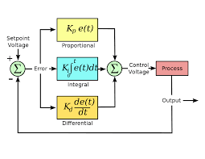

PID Loops
A PID loop is one of the most basic open loop control mechanisms in general control theory. The loop itself can be split into three different control mechanisms: Proportional control, Integral control, and Derivative control.
PID Explained
The P for proportional control takes place within the idea that an object in motion would be better off slowing down as it reached its target. By taking in the error between where the object is and where it wants to be, the proportional power is calculated.
The I for integral control operates under the assumption that in the real world, certain forces such as friction stop the object from reaching its destination. Since proportional control gives off low amounts of power closer to the target, integral control sums up the total error and gives the push the object needs to get to its target.
The D for derivative control accomodates for a high proportional coefficient, usually materializing as a negative number to offset the power in the case that an object is moving too fast. This is also used to keep the object from accelerating too fast during the start of its movement.
When added up all together, the values for PID, when tuned correctly, work together to give the object the correct amount of power to propel it to its destination smoothly.
PID Visualised
This very helpful video visualizes PID control and how to minimize steady state error. Unlike in the video, the processing speed of the phones is nowhere near close enough to bump up the valueus into the thousands. However, it does give a strong starting point into how to tune a PID.